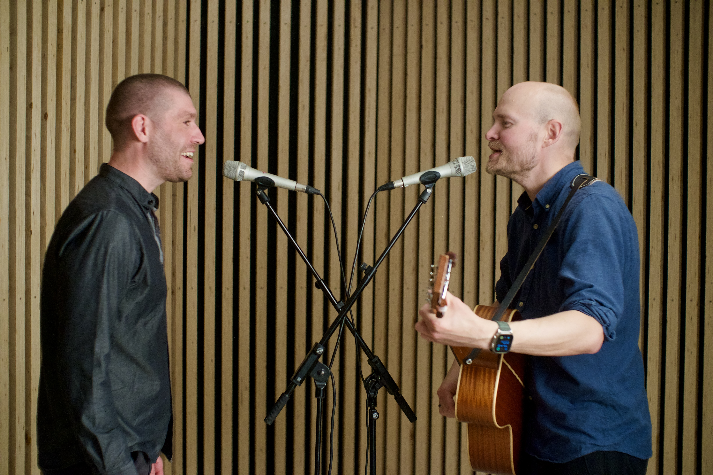
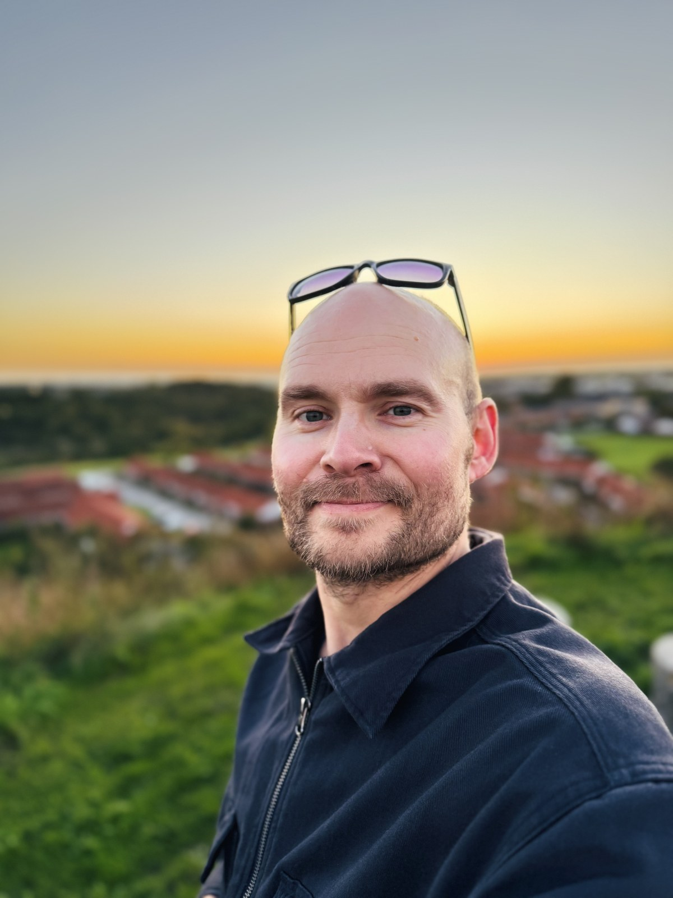

Flow & GreenNysgerrig af natur. Hjemme i Aarhus.
Lasse
Wingreen.
Product Owner. Arbejder praktisk med AI.
Sanger, guitarist og altid i gang med noget.

Ofte i gang med noget.
Lidt om mig
Åben for nye muligheder som Product Owner
01 / Lidt om mig
Jeg kan godt lide at forstå, hvordan ting fungerer. Og hvordan de kan blive bedre.
Jeg er Product Owner med en baggrund i kundesupport, implementering af SaaS-løsninger og digitalt design. Jeg arbejder også praktisk med AI: bygger hjemmesider og apps, udvikler genanvendelige arbejdsgange og omsætter idéer til noget, jeg kan afprøve og forbedre.
Jeg var hos iPaper i næsten ni år, først i support, derefter med implementering og til sidst som Product Owner. Nu søger jeg min næste udfordring inden for produktudvikling og bruger også tid på mine egne idéer.
AI i praksis
Mere om min erfaring (engelsk) AI-assisteret udvikling og genanvendelige arbejdsgange.
Jeg laver Claude-skills, som hjælper med at skrive tekster i en bestemt tone. Jeg har også bygget hjemmesider med Claude og ChatGPT og en indkøbsliste-app med Claude. Blandt mine private projekter er en model af mit hus, som jeg arbejder på med ChatGPT.
02 / Produktudvikling
Seneste arbejde hos iPaper · 2023–2026Fra brugerbehov
til brugbare specifikationer.
I mit produktarbejde kombinerer jeg praktisk kundeforståelse med de detaljer, der hjælper udviklerne videre.
01Checkout og produktvisningE-handel / Produktspecifikationer
Hos iPaper specificerede jeg hele projektet til forbedring af checkout og produktvisning i e-handelsløsningen. Undervejs drøftede jeg løbende kravene med udviklerne.
Min erfaring med implementering hjalp mig med at se, hvordan produktbeslutningerne passede ind i kundens samlede løsning.
02Tilgængelighed på tværs af produkterFlipbook og Horizon / Tilgængelighed
Jeg arbejdede med et samlet sæt tilgængelighedsfunktioner til Flipbook og specificerede en tilsvarende løsning til Horizon. Et gennemgående fokus var at gøre funktionerne forståelige og nemme at bruge.
Arbejdet bestod i at omsætte overordnede behov til konkrete opgaver og afklare detaljerne med udviklerne.
03Specifikation af et nyt produktHorizon / Krav og samarbejde
Til Horizon, en ny tilføjelse til iPapers produkter, specificerede jeg energimærkningssystemet og en lang række andre produktfunktioner.
Jeg arbejdede tæt sammen med udviklerne og deltog i de faste Scrum-møder gennem produktets udvikling.
03 / Fritid
Det, jeg bliver ved med at vende tilbage tilVæk fra skærmen.
Turen er en del
af oplevelsen.
Gravelcykling, at skrue på cyklen og at tage afsted og se, hvor ruten fører hen.
En løbetur giver
lidt luft.
Lange løbeture giver mig tid udendørs og en anden måde at få tænkt tingene igennem på.
Og midt i det hele: familien, hjemmet og det næste projekt.